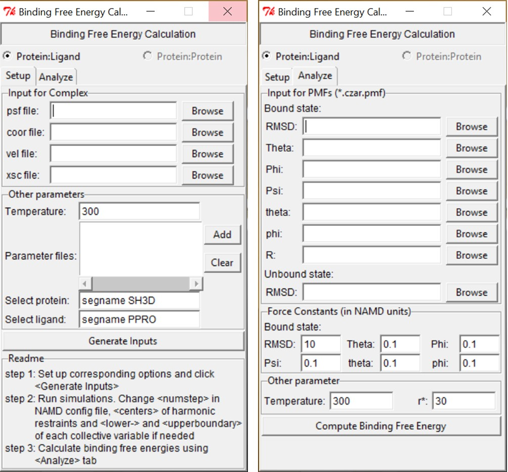
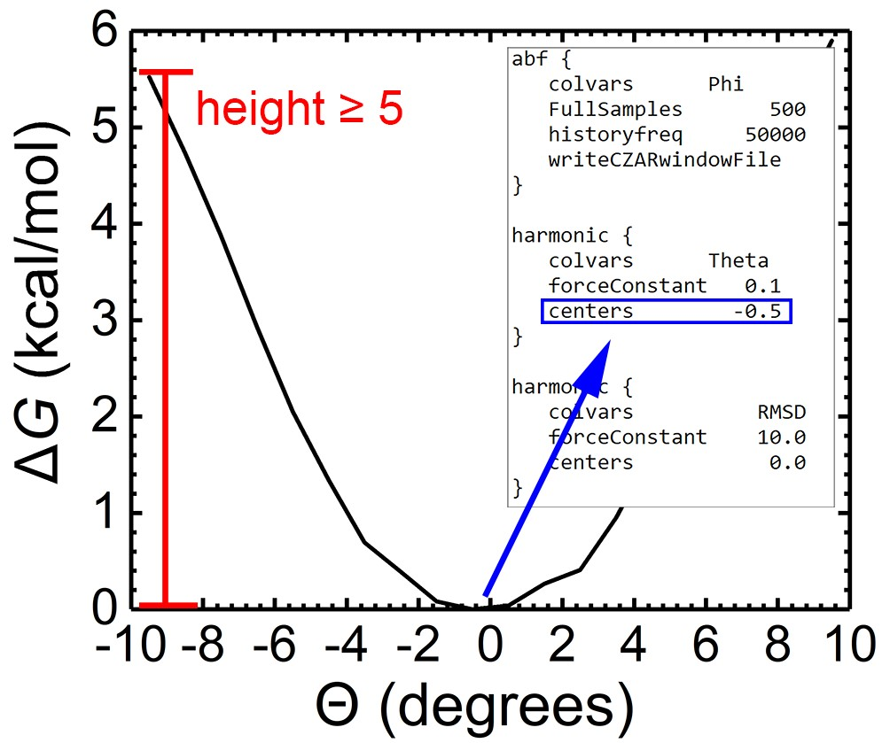

Binding Free Energy Estimator (BFEE) is a tool for automate generation and post-analysis of accurate binding free energy calculation [1-3].
Preparing the input files for the PMF calculations. BFEE requires the structure file of the complex in bulk water (psf file), the binary coordinates (coor file), the binary velocities (vel file), the periodic-cell dimensions (xsc file) and the force-field parameters (usually, prm or str files) as inputs. All of these files should already exist or be generated through an equilibrium simulation. The input files required for the eight individual PMF calculations are then automatically generated by clicking the “Generate Inputs” button, as shown in Figure 1.
Running the simulations.
Ideally, one can submit the configuration files directly to the NAMD program without any modification. It might be, however, desirable to tailor the range of values sampled in the PMF calculations, as well as the center of the harmonic restraints as a function of the protein-ligand complex at hand. For the simulations characterizing the change in the RMSDs of the ligand (both in the bound and in the unbound states), in the Euler angles and in the spherical angles, we suggest choosing a range of values that satisfies ΔG(max)-ΔG(min) ≥ 5 kcal/mol (See Figure 2). A short preliminary simulation for each angle can be performed to refine the range of values that ought to be covered in the different free-energy calculations. In addition, the center of each angular harmonic restraint acting on Θ, Φ, Ψ, θ, or φ may need to be adapted to reflect the corresponding free-energy minimum. In practice, due to the inherent complexity of protein-ligand binding, one may turn to use a staging, or stratification strategy in PMF calculations rather than a single-window simulation (by default) for an improved convergence rate.
Post-treatment. BFEE calculates the binding free energy as well as the contribution of each degree of freedom automatically. As shown in Figure 1, only the free-energy profile at each step of the workflow (usually czar.pmf) is needed as input if default force constants are used for the geometric restraints. The results of the free-energy calculation will be shown after clicking the button “Compute Binding Free Energy”. (Be careful about setting r*. It should be less than rmax in the separation step)
Example.zip provides the psf, coor, vel, xsc and force field files for cyclodextrin (CD)-progesterone system as a toy model. We recommend using this case as a starting point of applying BFEE. Note: in this example, r* ≤ 25 Å (by default, 30 Å) must be used in the post-treatment since the largest distance between CD and guest molecule in the separation simulation is 25 Å.
References
(1) Gumbart, J. C.; Roux, B.; Chipot, C. Standard binding free energies from computer simulations: What is the best strategy? J. Chem. Theory Comput. 2013, 9, 794-802.
(2) Gumbart, J. C.; Roux, B.; Chipot, C. Efficient determination of protein–protein standard binding free energies from first principles. J. Chem. Theory Comput. 2013, 9, 3789-3798.
(3) Fu, H.; Cai, W.; Hénin, J.; Roux, B.; Chipot, C. New coarse variables for the accurate determination of standard binding free energies. J. Chem. Theory Comput. 2017, 13, 5173-5178.
How to cite BFEE. Fu, H.; Gumbart, J. C.; Chen, H.; Shao, X.; Cai, W.; Chipot C. BFEE: A User-Friendly Graphical Interface Facilitating Absolute Binding Free-energy Calculations. J. Chem. Info. Model. 2017, DOI: 10.1021/acs.jcim.7b00695.
Contributors. Chris Chipot (chipot@illinois.edu), James C. Gumbart (gumbart@physics.gatech.edu) and Haohao Fu (fhh2626@gmail.com).
|

Figure 1. BFEE graphic user interface.

Figure 2. Example PMF for Eular angle Θ. ΔG(max)-ΔG(min) ≥ 5 kcal/mol is highly suggested in simulation describing RMSD and angles. The center of the harmonic restraints of Euler and spherical angles (Note: excluding RMSD) should be tailored according to the corresponding free-energy landscape.
|